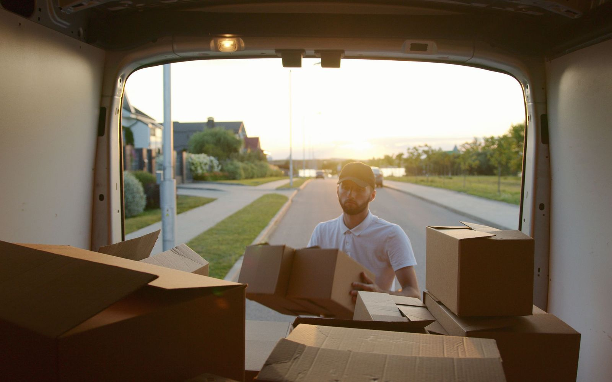
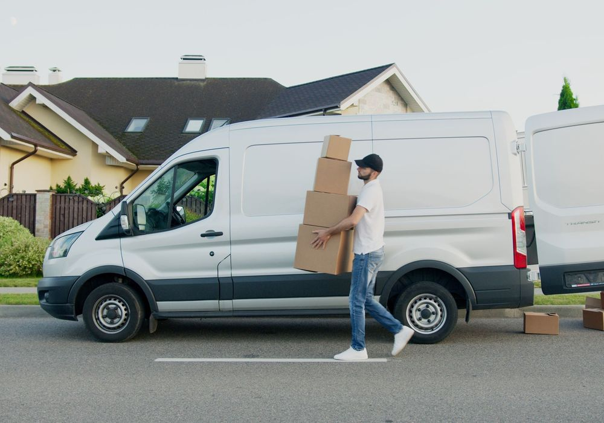

Flytthjälp så att du slipper bära
Vi bär ut, lastar, kör och bär in. Trapphus, dörrar och golv skyddas med filtar och tejp innan vi börjar. Du behöver bara visa vägen.
Flyttfirma i Stockholm sedan 2011
Vi går igenom din flytt på 20 minuter och skickar ett skriftligt pris inom en arbetsdag. RUT-avdraget drar vi direkt på fakturan, och vi kör i hela Stockholm.

Tjänster
Du väljer de delar du vill ha hjälp med. Priset står skriftligt i offerten innan vi lyfter en enda kartong, och RUT-avdraget räknas in från början.
Vi bär ut, lastar, kör och bär in. Trapphus, dörrar och golv skyddas med filtar och tejp innan vi börjar. Du behöver bara visa vägen.
Vi städar efter en checklista som hyresvärdar och mäklare godkänner. Fönster, vitvaror, lister och badrum ingår. Blir något anmärkt kommer vi tillbaka.
Låst och uppvärmt magasin i Stockholm. Transport till och från magasinet ingår när vi gör flytten. Du betalar bara för den yta du använder.
Vi flyttar kvällstid eller i helgen så att kontoret är igång på måndag morgon. Datorer, skärmar och känslig utrustning märks och packas separat. Skrivbord och stolar ställs tillbaka på plats.
Vi packar rum för rum och märker varje kartong med innehåll och destination. Porslin, glas och konst får extra skydd. Emballage och tejp ingår i offerten.
Piano, kassaskåp och vitvaror kräver rätt utrustning och vana. Vi tittar på plats först och väljer lyftväg, till exempel via fönster eller hiss. Trånga trapphus är vardag för oss.
Så går det till
Flyttkollen tar 20 minuter och den skriftliga offerten kommer inom en arbetsdag. Du vet vad flytten kostar innan vi lyfter något.
Vi går igenom bohaget på plats eller via video. Vi räknar volym och ser hinder som trappor, hissar och trånga dörrar.
20 minuterDu får en skriftlig offert där datum, tid och RUT-avdraget räknas in. Inga kostnader tillkommer utan att du har godkänt dem.
Inom 1 arbetsdagVi packar det du vill ha hjälp med, skyddar trapphuset och lastar bilen. Sedan kör vi till den nya adressen och ställer möblerna där de ska stå.
1–8 timmarFlyttstädning, gemensam besiktning och städgaranti i sju dagar. Du får kvittot med RUT-avdraget, färdigt att lämna till Skatteverket.
Samma veckaPris och RUT-avdrag
Flyttkollen är gratis och tar 20 minuter. Efteråt får du ett fast pris skriftligt, och alla belopp här är visade efter RUT-avdrag.
Fast pris
Skriftligt, innan vi börjar
Priset sätts efter den kostnadsfria flyttkollen. Det står fast om du inte ändrar omfattningen.
Timpris flytthjälp
1 195 kr/tim
Två flyttare och flyttbil, inkl. moms. Efter RUT-avdrag på arbetskostnaden ca 745 kr/tim.
Flyttstädning
30–35 kr/m²
Efter RUT-avdrag. En lägenhet på 50 m² landar på ca 1 750 kr.
RUT-avdrag
50 % av arbetet
Högst 75 000 kr per person och år. Vi drar av beloppet direkt på fakturan.
Raderna är exempel på flyttar inom Stockholms stad. Slutpriset skriver vi fast efter flyttkollen. Alla belopp är visade efter RUT-avdrag.
Halva arbetskostnaden dras av, och du behöver inte ansöka själv. Här är vad som omfattas.
Detta gäller inte:
ROT och RUT delar samma tak på 75 000 kr per person och år, och ROT får vara högst 50 000 kr av det. Två vuxna i samma hushåll kan använda upp till 150 000 kr tillsammans.
Vi drar av beloppet direkt på fakturan och sköter pappersarbetet hos Skatteverket.
Kundomdömen
Tre kunder i Stockholm berättar vad som var krångligt och hur det löste sig.
★★★★★5 av 5 i betyg
Vi flyttade från en tvåa på Södermalm till hus i Bromma. Trapphuset i gamla huset är smalt, men flyttarna lade skydd på karmar och golv innan de bar ner något. Det fasta priset stod kvar, trots att det tog en timme extra.
★★★★★5 av 5 i betyg
Vårt kontor på Kungsholmen har 18 arbetsplatser. Vi flyttade på en helg och var oroliga för måndagsmötet. Skrivbord, skärmar och stolar stod på plats när första medarbetaren kom vid åtta. Varje låda var märkt med rum, så uppackningen tog en förmiddag.
★★★★★5 av 5 i betyg
Jag flyttade från en hyresrätt i Solna och hade besiktning tre dagar senare. Städningen tog hela lägenheten, inklusive ugn och fönster. Besiktningsmannen hittade inget att anmärka på och jag fick depositionen tillbaka direkt.
Områden
Vi tar uppdrag i 20 stadsdelar och förorter i Stockholm och i hela länet. Körning utanför tullarna offereras utifrån dina adresser innan flytten, så sträckan ingår i priset du får skriftligt.
Sträckan utanför tullarna räknas in i offerten tillsammans med tiden på plats. Du får inget bränsletillägg och ingen administrationsavgift som dyker upp efteråt.
Vanliga frågor
Pris, RUT-avdrag, städgaranti och vad som gäller om något går sönder. Läs svaret du behöver och gå vidare med flyttkollen när du är redo.
Flytthjälp med två flyttare och flyttbil kostar 1 195 kr per timme inklusive moms. Efter RUT-avdrag på arbetskostnaden blir samma timme ca 745 kr. Exempel inom Stockholms stad efter RUT: etta 35–45 m² 3 500–5 500 kr, tvåa 55–65 m² 5 500–8 500 kr, trea 75–95 m² 8 000–12 000 kr och villa över 120 m² 12 000–20 000 kr. Flyttstädning kostar 30–35 kr per m² efter RUT, vilket ger ca 1 750 kr för 50 m² och ca 3 000 kr för 100 m². Intervallen är marknadspriser för Stockholm 2026, inte ett löfte om ditt slutpris. Det exakta priset skriver vi fast efter den kostnadsfria flyttkollen, innan något lastas.
Ja. RUT-avdraget ger 50 procent av arbetskostnaden, med ett tak på 75 000 kr per person och år. Två personer i samma hushåll kan använda upp till 150 000 kr tillsammans. Avdraget gäller flytt av bohag mellan bostäder, transport av bohag till och från magasinering och flyttstädning. Det gäller inte flyttkartonger och emballage, och inte hyran för magasinet. Vi drar av beloppet direkt på fakturan och ansöker hos Skatteverket, så du behöver inte göra något själv.
Vi städar enligt en checklista: fönster putsas, vitvaror rengörs inuti och bakom, badrummet avkalkas, och vi tar bakom och under fast inredning. Checklistan får du innan vi börjar, så du ser exakt vad som omfattas. Har hyresvärden eller mäklaren synpunkter vid besiktningen kommer vi tillbaka inom 7 dagar och åtgärdar det utan extra kostnad.
Flyttkollen tar 20 minuter och den skriftliga offerten kommer inom en arbetsdag. En normal bokning lägger vi 1–3 veckor framåt. Behöver du flytta tidigare går det ofta att lösa en akutflytt inom 48 timmar om kalendern tillåter. Ring och fråga om just ditt datum, så säger vi direkt om vi har en bil och ett team lediga.
Vi är fullförsäkrade och varje flytt dokumenteras med foton innan lastning. Upptäcker du en skada anmäler du den till flyttledaren, som registrerar ett ärende samma dag. Därefter reparerar vi eller ersätter enligt försäkringsvillkoren. Du får besked om vad som gäller i ditt ärende, och en namngiven person att prata med.

Om oss
Vi kör flyttar i Stockholm sedan 2011. I dag rullar nio flyttbilar från vår depå. All personal går på kollektivavtal och företaget har F-skatt. Varje flyttare är ID-kontrollerad inför uppdraget. Din flyttledare ringer dagen innan och går igenom trapphus, parkering och tider, så att inget står oförberett på flyttdagen.
Du får samma flyttledare från flyttkoll till avslut. Offerten är skriftlig och kommer inom en arbetsdag, med arbetstid, bil, emballage och eventuell städning utsatta på varje rad. Priset i offerten gäller. Inga dolda avgifter och inga tillägg på fakturan efter flyttdagen.
Marcus Lindqvist Flyttledare sedan 2014 · Flytt & Transport Stockholm
Offert
Fyll i adresserna och vad som ska flyttas. Vi ringer upp och går igenom flytten på 20 minuter.
Ring oss om du har frågor om pris, datum eller tunga lyft. Vi svarar direkt och kan boka flyttkollen i samtalet.